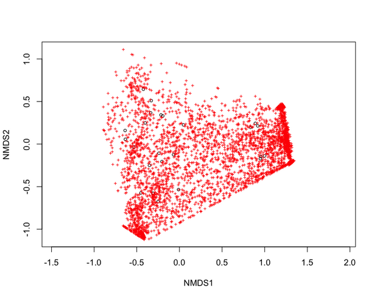
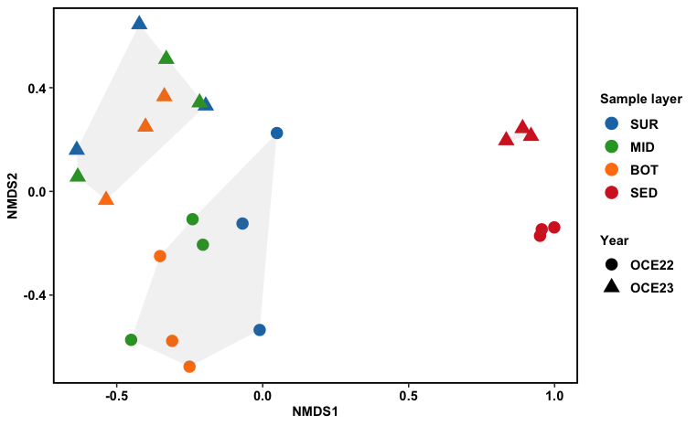

Date: July 01, 2025
Non-metric Multidimensional Scaling (NMDS) is a powerful ordination technique used to reduce the dimensionality of complex ecological data, such as OTU or ASV tables, by representing patterns in two or three dimensions.
In NMDS plots:
Unlike PCA or PCoA, NMDS is non-parametric-it’s rank-based and does not assume normally distributed data, which is ideal for microbial ecology datasets that often contain many rare taxa (long-tailed distributions).
To perform NMDS, we generally follow these steps using the vegan package.
# Load Required Packages
install.packages("vegan") # if not already installed
library(vegan)
#input dataset and turn abundance data frame into a matrix
com = read.csv("ASV_table.csv",row.names = 1, header= TRUE)
com <- as.matrix(t(com))
# Show first 5 rows and first 10 columns
com[1:5, 1:10]
> com[1:5, 1:10]
ASV1 ASV10 ASV100 ASV1000 ASV1001 ASV1002 ASV1003 ASV1004 ASV1005 ASV1006
OCE22_BL1_01 0 143055 7 0 1 0 2 0 0 3
OCE22_BL1_02 38639 18080 1481 518 103 0 7 0 4 251
OCE22_BL1_03 10686 23020 19225 0 88 0 2 0 39 44
OCE22_BL2_01 3195 346 0 0 0 0 69 0 0 7
OCE22_BL2_02 73508 18791 44 0 16 1 2 0 0 50
Here, the CSS method is used for normalization.
There are a few alternative normalization methods commonly used for microbiome or ecological count data, each with its own strengths depending on your analysis goals:
Each method has trade-offs, so your choice should align with your research question and downstream statistical requirements.
# Load required packages
library(metagenomeSeq) # For CSS normalization
# Transpose the input community matrix so that samples are rows, OTUs/ASVs are columns
ASV_read_count = as.data.frame(t(com))
# Convert to metagenomeSeq object
metaSeqObject = newMRexperiment(ASV_read_count)
# Compute normalization factor using CSS method
metaSeqObject_CSS = cumNorm(metaSeqObject, p = cumNormStatFast(metaSeqObject))
# Extract CSS-normalized counts (log-transformed)
ASV_read_count_CSS = data.frame(MRcounts(metaSeqObject_CSS, norm = TRUE, log = TRUE))
# Transpose so that samples are rows and ASVs are columns (vegan expects this)
m_com = as.matrix(t(ASV_read_count_CSS))
# Run NMDS Ordination
set.seed(123) # For reproducibility
# Perform NMDS using Bray-Curtis distance
nmds = metaMDS(m_com, autotransform = FALSE, distance = "bray")
nmds
> nmds
Call:
metaMDS(comm = m_com, distance = "bray", autotransform = F)
global Multidimensional Scaling using monoMDS
Data: m_com
Distance: bray
Dimensions: 2
Stress: 0.1447543
Stress type 1, weak ties
Best solution was repeated 8 times in 20 tries
The best solution was from try 1 (random start)
Scaling: centring, PC rotation, halfchange scaling
Species: expanded scores based on ‘m_com’
plot(nmds)
Quickly interpreting the output

ggplot2, ggrepel, and dplyr.x and y.year_layer group based on NMDS coordinates.SUR, MID, BOT, SED).
library(ggplot2)
library(ggrepel)
library(dplyr)
# Extract NMDS scores (x and y coordinates)
data.scores <- as.data.frame(scores(nmds, display = "sites"))
names(data.scores)[1:2] <- c("x", "y") # Rename axes
# Load metadata
metadata <- read.csv("meta_env.csv", row.names = 1, header = TRUE)
head(metadata)
station year year_layer layer
OCE22_BL1_01 BL01 OCE22 OCE22_water SUR
OCE22_BL1_02 BL01 OCE22 OCE22_water MID
OCE22_BL1_03 BL01 OCE22 OCE22_water BOT
OCE22_BL2_01 BL02 OCE22 OCE22_water SUR
OCE22_BL2_02 BL02 OCE22 OCE22_water MID
OCE22_BL2_03 BL02 OCE22 OCE22_water BOT
# Add metadata columns
data.scores$layer = metadata_matched$layer
data.scores$year = metadata_matched$year
data.scores$station = metadata_matched$station
data.scores$year_layer = metadata$year_layer #for hull data
# Get convex hulls for each group
grp1 <- data.scores[data.scores$year_layer=="OCE22_water",][chull(data.scores[data.scores$year_layer=="OCE22_water",c("x", "y")]),]
grp2 <- data.scores[data.scores$year_layer=="OCE23_water",][chull(data.scores[data.scores$year_layer=="OCE23_water",c("x", "y")]),]
grp3 <- data.scores[data.scores$year_layer=="OCE22_sediment", ][chull(data.scores[data.scores$year_layer=="OCE22_sediment",c("x", "y")]),]
grp4 <- data.scores[data.scores$year_layer=="OCE23_sediment", ][chull(data.scores[data.scores$year_layer=="OCE22_sediment",c("x", "y")]),]
# Combine hulls into a single dataframe for plotting
hull.data <- rbind(grp1, grp2, grp3, grp4)
# Color define for each layer
layer_colors <- c("SUR" = "#1f77b4", "MID" = "#2ca02c", "BOT" = "#ff7f0e", "SED" = "#d62728")
ggplot2.
p <- ggplot() +
geom_point(data = data.scores, aes(x,y, fill = year, color= layer , shape = year ), size=4) +
scale_color_manual(values = layer_colors) +
geom_polygon(data=hull.data, aes(x,y, fill = "#8ecae6", group = year_layer), alpha=0.1) +
scale_fill_manual(values = layer_colors) +
labs(colour = "Sample layer", shape = "Year" , x = "NMDS1", y = "NMDS2") +
theme(axis.text.y = element_text(colour = "black", size = 10, face = "bold"),
axis.text.x = element_text(colour = "black", face = "bold", size = 10),
legend.text = element_text(size = 10, face ="bold", colour ="black"),
legend.position = "right", axis.title.y = element_text(face = "bold", size = 10),
axis.title.x = element_text(face = "bold", size = 10, colour = "black"),
legend.title = element_text(size = 10, colour = "black", face = "bold"),
panel.background = element_blank(),
panel.border = element_rect(colour = "black", fill = NA, size = 1.2),
legend.key=element_blank()) + geom_text_repel() + guides(fill = "none")
p
